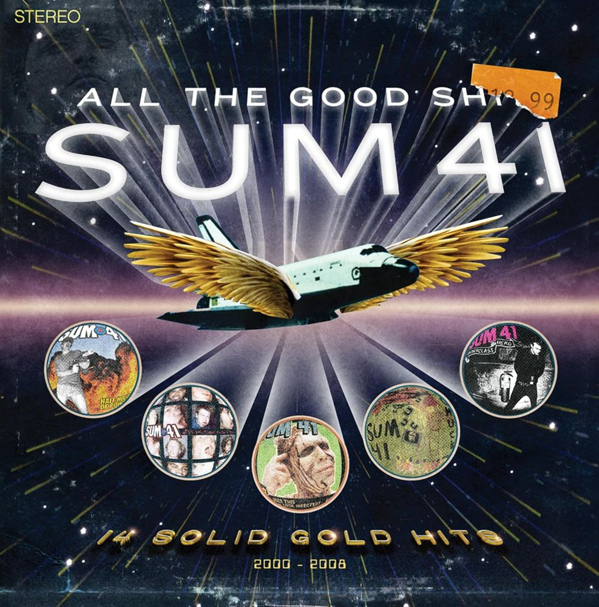
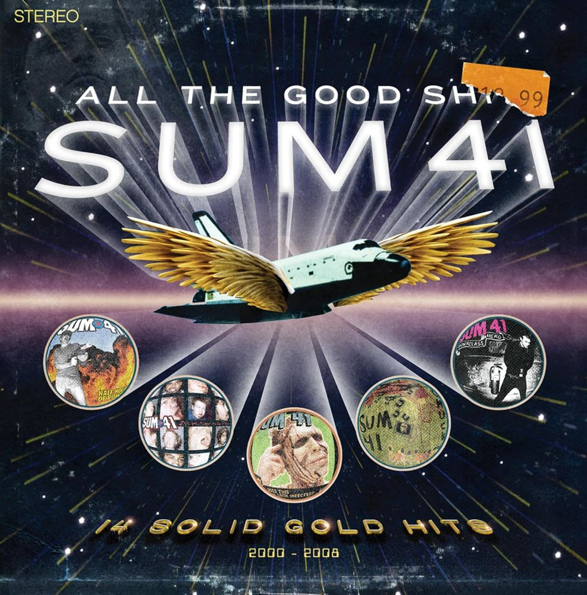
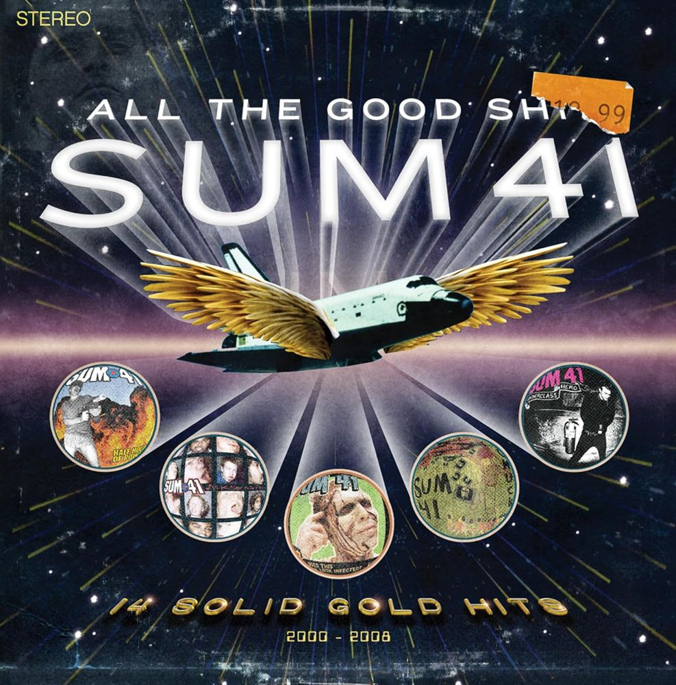
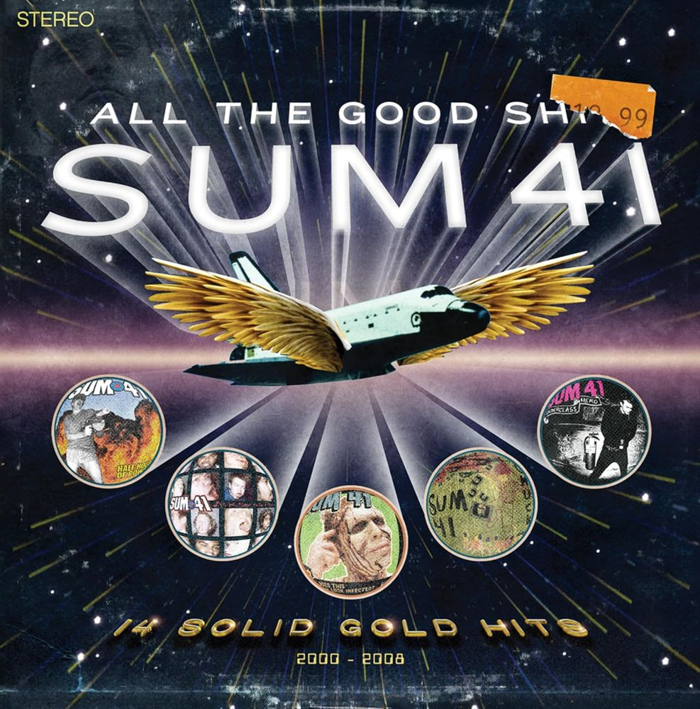

Что интересного вы у нас найдете
Ассортимент, декор и персонал
Наше кафе состоит из двух зон, украшенных кошачьими элементами. Первая зона само кафе, а вторая игровая, в которой вы можете провести время с нашими котиками.

В нашем кафе большой выбор горячих и холодных напитков. А также большой выбор десертов в кошачьей тематике.

В кафе вас встретят прекрасные кошко-девушки. На протяжении всего вашего присутствия они будут сопровождать и радовать вас.

Наши котики

Это элегантный и изысканный котик с очаровательной внешностью. Он очень культурный и скромный, любит играть с солнечными зайчиками и плюшевыми мышками. А его любимое лакомство лосось.

Это гордая и независимая кошечка. Она любит лежать на коленках у гостей и нежиться на солнышке. Если вы захотите ее угостить, то знайте, ее любимое блюдо - куриная грудка.

Это очень ласковый котик. Он любит спать на подоконнике, греясь на солнышке. Муро нравится, когда его гладят или чешут ему животик. При желании можете покормить его креветками.

Эта красавица просто обожает общаться с посетителями!